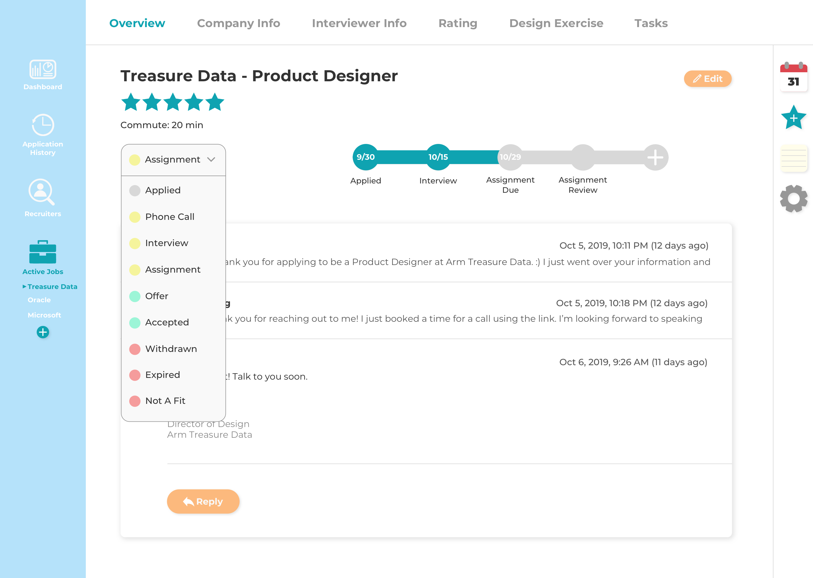
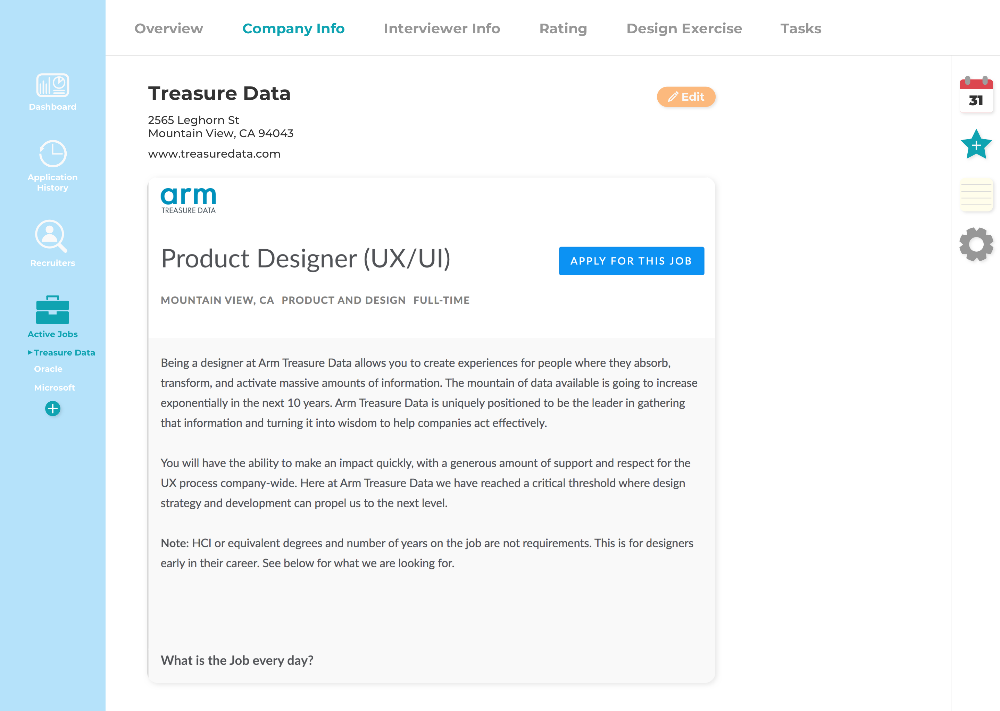
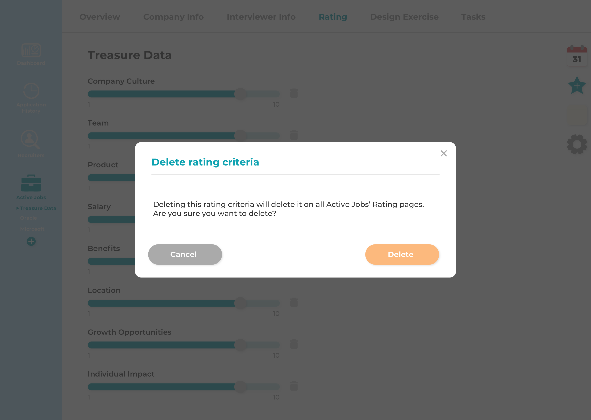

Left Side Nav:
I designed icons for the dashboard, application history, recruiters, and active jobs.
We will only be looking at screens under active jobs.
Right Side Nav:
I wanted to make this similar to the extensions I see in Gmail because this is something
I am already familiar with. The idea of the calendar is that I can click on it to view what
my interview schedule looks like in the upcoming weeks/months. The teal star with a plus
sign allows me to add my different personal rating criteria. I can view the notes I took
specific to the tab I'm on by clicking on the notes icon (use case 1). And finally, I can
modify features in settings to customize my personal job tracker.
The overview screen shows me the company's name, the position I applied for, a rating out of five stars, how long the commute is, application status (use case 2), timeline of interviews and assignments (use case 2), and my email thread with the recruiter/interviewer (use case 3).
The dropdown menu allows me to change the status of my application.
The email thread is formatted similarly to Gmail.
Feedback:
It should still include text modification features such as changing fonts, font size,
bolding, italicizing, etc and be able to attach files.
Empty state of the company info screen.
Company info screen with the fields filled out.
A modal with a form pops up when I click on the edit button. Here I can input the
company's address, company's website, and a link to the job post which will be embedded
in the page after I click the save button.
Feedback:
Pop up modals are outdated and clunky because it requires the
user to go through multiple steps in order to update/edit information. It would be more
modern to just make it similar to how Google docs are where I can edit and autosave in
real time.
Elements on the screen are shifted to the left when I open up my notes. Here I can add notes about the company such as company size, mission, perks, etc.
I originally only had the info of one interviewer on this screen, but I realized that further along in the interview process I may have more than one interviewer, so I added the ability to toggle between different interviewers. (use case 4)
Here I can add questions I would like to ask during the interview.
These are my personal rating criteria. I can adjust the rating by dragging the knob along the slider (use case 8). I made the slider go from 1 to 10 to allow for half stars. (The overview page shows the overall rating out of five stars).

Deleting a rating criteria on a specific job's rating page would delete it on all the rating tabs
of each active job, so a modal would pop up to confirm that I really want to delete it.
Feedback:
It's too easy to perform this delete action which will delete the criteria
across all active jobs. This delete action would be better suited maybe in the settings.
If I want to add more personal rating criteria, I can click on the star icon on the right nav, and this will add that rating criteria to all active jobs.
Here I can input the instructions for the design exercise if I receive one, and the area underneath allows me to upload or drag and drop files/screenshots related to the design exercise (use case 6).
I just made the tasks look like a simple to-do list with checkboxes next to each task which I can check off as I complete each task. I originally wanted the task to be crossed out once the checkbox is checked, but I decided I still wanted to be able to read what the completed task was.
Here I can add a new task.
Could use improvement on visual design or make use of UI kits. Be more consistent about button placement. Design techniques also need improvement. I started doing Daily UI Challenges in order to get more practice with visual design and hopefully improve my design technique as well. Check out my "Daily UI" tab to see my progress on that!